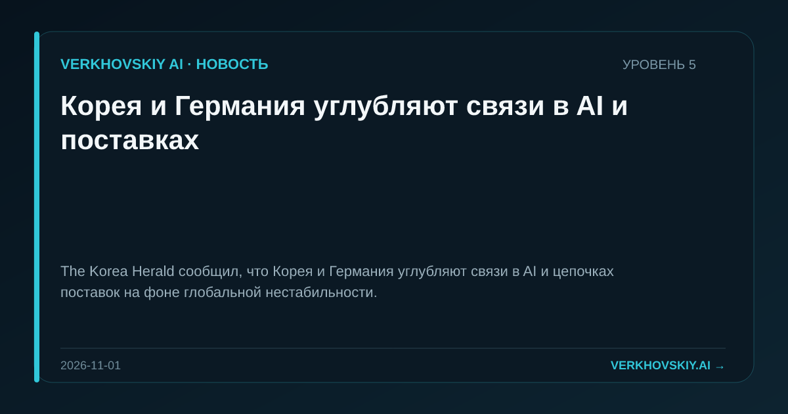

Корея и Германия углубляют связи в AI и поставках
The Korea Herald сообщил, что Корея и Германия углубляют связи в AI и цепочках поставок на фоне глобальной нестабильности.

The Korea Herald сообщил, что Корея и Германия углубляют связи в AI и цепочках поставок на фоне глобальной нестабильности.